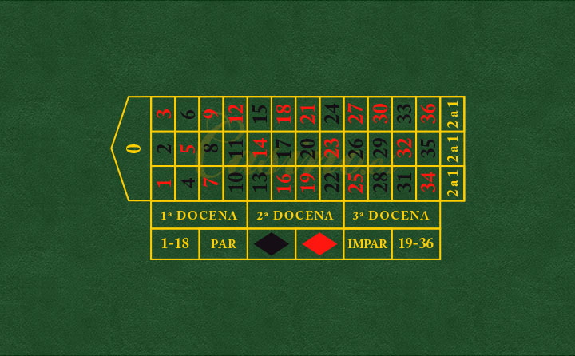

En los últimos tiempos, la ludopatía ha afectado en gran medida a la sociedad, tanto jóvenes como adultos;
es por esto que el gobierno de la Nación ha decidido realizar una campaña de concientización, modelando el
juego de la ruleta de un casino.
En este juego, la ruleta se gira aproximadamente cada cinco minutos.
- Al apostar por un número específico, la probabilidad de ganar es de 1 en 37, es decir P(N) = 0.027 = 2.7%.
- Al apostar por un color, la probabilidad de ganar es de 18 en 37, P(C) = 0.486 = 48.6%.
- Por último, al apostar por una docena, la probabilidad de ganar es de 12 en 37, P(I) = 0.324 = 32.4%.
El gobierno desea enseñar las siguientes situaciones a los destinatarios de la campaña:
-
Si una persona juega siempre al mismo número, ¿cuánto tiempo necesita jugar hasta ganar?
-
Si una persona juega un monto fijo x, siempre al mismo número, ¿cómo quedará su balance cuando gane?
-
Si se juega durante una hora, siempre a la misma docena, ¿Cuántas veces se ganaría?
-
Jugando durante 25 tiradas, ¿Cuántas veces saldrá un color?
